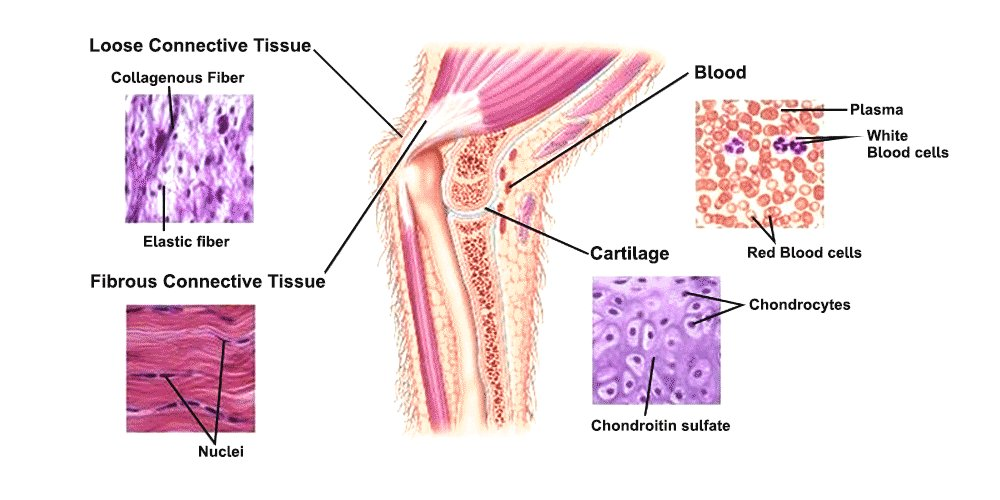
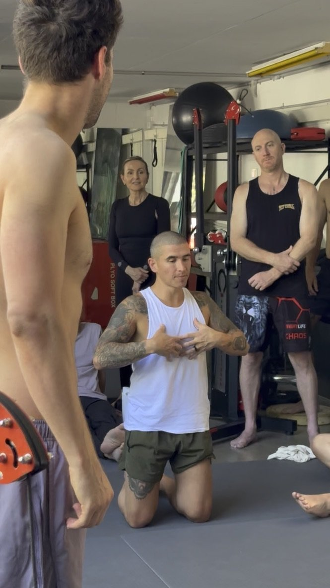

Unlocking Relief: The Intriguing Link Between Fascial Health and Hyper-mobility
Hyper-mobility presents a range of challenges to those affected, encompassing joint flexibility, increase risk of injury, decreased coordination, poor balance, delicate skin, and persistent pain. If you're on the hunt for effective strategies to tackle these symptoms, delving into the correlation between fascial health and symptom alleviation could provide fresh insights. In this blog, we deep dive into the connection between fascial health and hyper-mobility, guiding you through how optimising fascial mobility might ease the discomfort associated with this condition.
The intricate web of connective tissue known as fascia plays a pivotal role in your musculoskeletal health. Recent research has shone a spotlight on its significance in proprioception, which is your body's awareness of movement and position. This connection between fascial mobility and myo-fascial pain, a common experience among those with hyper-mobility, illuminates the potential for more effective symptom management.
The Link - Fascia, Pain, and Hyper-mobility: Fascia comprises small-diameter fibres that transmit pain signals, particularly when inflammation is present. This revelation holds great importance for individuals grappling with hyper-mobility, given the common occurrence of pain. A central aspect of hyper-mobility discomfort lies in myo-fascial pain syndrome, characterised by tender nodules termed "trigger points.".

Connective Tissue
THE KEY TO REDUCING HYPER-MOBILITY & RESTORING BALANCE
Enhancing Fascial Health in Hyper-mobility & Connective Tissue Disorders
The chief complication in hyper-mobility lies in the challenge of achieving healthy muscle contraction. But what exactly constitutes healthy muscle contraction, and why is it of paramount importance?
For a comprehensive understanding, this article is an essential read for those facing hyper-mobility who aspire to cultivate stability, strength, and evenly distributed tension.
Unpacking Healthy Muscle Contraction: Muscle contraction initiates with a signal from the nervous system, prompting the release of calcium ions within muscle cells. These calcium ions interact with proteins, primarily actin and myosin, initiating a series of events that culminate in the shortening of muscle fibres. This process generates force, enabling muscles to contract and facilitate movement.
Tensegrity Structure: A structure held together through uniformly distributed tension
Tensegrity and Muscle Contraction:
Tensegrity embodies a structural principle wherein tensional and compressional elements collaborate to establish stable structures. In the context of the human body, muscles, bones, and connective tissues form a tensegrity system. Muscles provide tension, while bones and other tissues offer compression. This interconnected setup fosters balanced movement and stability.
Within this tensegrity framework, proper muscle contraction is pivotal not solely for movement, but also for upholding structural integrity. When muscles contract, they generate tension transmitted through fascia and other connective tissues to the bones. This tension ensures appropriate alignment and support, guaranteeing uniform force distribution across the structure.

Tensegrity Structure: A structure that is held together by evenly distributed tension.
Hypermobility and Muscle Contraction: Hypermobile individuals exhibit joint flexibility surpassing typical ranges of motion. Though seemingly advantageous, this can disrupt the equilibrium within the tensegrity system. Envision the structure above with elastic string components stretched to the point of slackness. This scenario results in loss of shape. In hyper-mobility, excessive joint mobility can induce laxity in ligaments and connective tissues. This laxity may influence muscle-generated tension, hindering optimal contraction. The dearth of effective tension transmission through relaxed connective tissues can lead to diminished stability and compromised control over movement. Furthermore, hyper-mobile joints are more susceptible to injury due to reduced surrounding tissue support.
In hyper-mobile individuals, extra energy is also required for basic stability. This increased energy expenditure can induce fatigue and exhaustion, adding to the overall sense of discomfort due to the absence of contractile backing.
Hyper-mobile Tissue, Contraction, and Dehydration
Dehydration and Fascial Health: Connective tissues, encompassing fascia, play a pivotal role in sustaining bodily hydration. Fascia houses an intricate network of fluid-filled spaces that nourish cells and uphold tissue well-being. In individuals with hyper-mobility, compromised fascial health may influence fluid distribution. Lax fascia might struggle to effectively hold and disperse fluids, potentially resulting in dehydration or suboptimal fluid equilibrium within tissues. Adequate hydration is vital for tissue health, and any disruption in fluid dynamics can amplify discomfort and pain.
Tissue Inflammation and Pain Sensitivity: Relaxed connective tissues are prone to inflammation and irritation. Inadequate support renders tissues more susceptible to inflammation, heightening pain sensitivity. Inflammation within hypermobile tissues can exacerbate discomfort and contribute to chronic pain.
What Can You Do To Support Your Fascia?
Unlocking Relief through Fascia Mobility: Enriching fascia hydration and healthy muscular contraction presents promising prospects for managing hyper-mobility symptoms:
Enhancing Joint Stability: Key to joint stability is mastering the art of cultivating healthy muscle contraction and restoring the body's tensegrity structure. This involves breaking fascial adhesions while avoiding overstretching already hypermobile tissue. Instead, focus on contracting tissue in harmony with the gait cycle for optimal outcomes.
Mitigating Pain: Addressing fascial imbalances and restrictions can provide respite from myofascial pain. Techniques such as manual therapy and movement-based therapies (as mentioned earlier) can prove beneficial. Swift pain relief stems from identifying and resolving fascial adhesions, while long-lasting relief arises from nurturing tissue tension and hydration through gait cycle equilibrium and improved muscle contraction/elastic potential.
Elevating Proprioception: Fascia's role in proprioception, governing movement perception, impacts body awareness and movement control (your sense of coordination). Proprioception-based training, such as Functional Patterns, compels the correct muscles to respond to apt stimuli, while avoiding exercises that may hinder proprioception due to unnatural movements or lack of consideration for hyper-mobility within tensegrity.
Revitalising Muscle Function: Tending to fascial restrictions bolsters muscle function, thereby lending augmented support to weakened connective tissues. As you hone correct muscle contraction and diminish fascial adhesions, a positive feedback loop emerges.
Personalised Approaches for Hypermobility Relief: There's no universal strategy for managing hyper-mobility; instead, tailored approaches spotlighting fascial health offer personalised relief:
Biomechanics Training: Targeted exercises enhancing movement patterns, joint stability, and muscle engagement contribute to holistic symptom management.
Gait Training: Analysing and enhancing walking patterns curbs strain on hyper-mobile joints, improving stability and pain control. This is primarily achieved by uniformly distributing tension and optimising loading during movement based on gait analysis.
Soft Tissue Mobilisation & Myo-fascial Release: Manual techniques that release fascial adhesions and augment tissue flexibility can alleviate myo-fascial pain and increase the ability to achieve correct contractile potentials, tissue hydration and elasticity of connective tissue.
Augmented Proprioception: Introducing exercises elevating proprioceptive awareness cultivates superior stability and control.
For individuals grappling with hyper-mobility, unearthing the nexus between fascial health and symptom management bears significance. The intricate interplay between fascia mobility and hyper-mobility symptoms constitutes a realm of ongoing study. Grasping fascia's impact on your condition and symptoms empowers collaboration with healthcare experts to explore pioneering avenues for relief. As ongoing research delves into the link between fascial health and hyper-mobility, a holistic strategy for symptom management could surface, offering renewed hope and enhanced well-being.